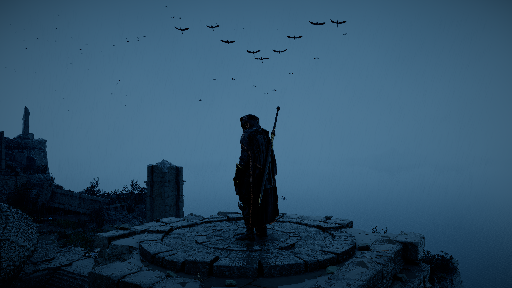

It was a news came at peaceful morning, according to the Rashburn news association, or atleast what they told the public, was the Ashborn mother will decendend upon us after 5 centuries. To the future generation, this ment that they no longer can fly free nor fill their lives with liberal meaning.
But to think that Ashborn were returning after such a short period of time was concerning,
some would say that this news is false while others concluded it a part of Obernius' plan,
whatever it was, I could not know, since that was the last thig i heard before leaving the Rashburn city.
Mob gathered all around the Amber sky to witness the decend of Ashborn, even if filled with fear we all knew that there was nothing we could do to stop this,
an hour passed, then another, then another, nothing happened?
I now lay on my death bed, wondering if it was all fake or a dream
for what I remember of my life, the day sky turned Amber, I was no longer free.